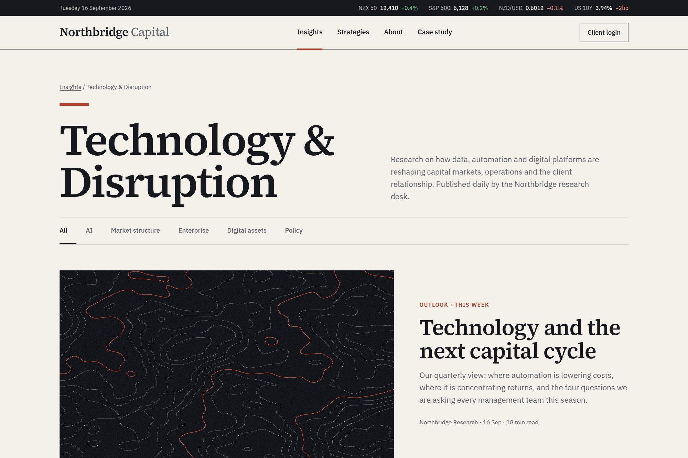

10 — Research hub
Making dense research feel effortless.
A daily-publishing research hub that absorbs editorial volume without reading as a link dump.

- Type
- Concept · self-directed
- Discipline
- Web · UI
- Deliverables
- Grid system, category taxonomy, hub template
- Density
- 9 stories per view
01The brief
Northbridge Capital publishes daily across AI, market structure and enterprise innovation. The hub had to handle that volume in a modern finance tone and never feel like a link dump.
Density was the constraint: nine simultaneous stories had to stay scannable without shrinking type or stacking cards by importance.
02Design decisions
- A strict nine-card grid — every insight gets identical space, and hierarchy comes from imagery and category rather than card size.
- Small-caps category labels lead each card, so researchers scan by theme before committing to a headline.
- Ink, paper and one accent bar; a 4px hover lift is the only motion on the page.
03Outcome
A template that takes weekly publishing volume without redesign, now the pattern for the full insights programme, with a single call to action placed after the reader has already had value from the grid.
A concept project designed in-house by Yonder Tech, not a client engagement. Figures describe the delivered design system, not commercial results.